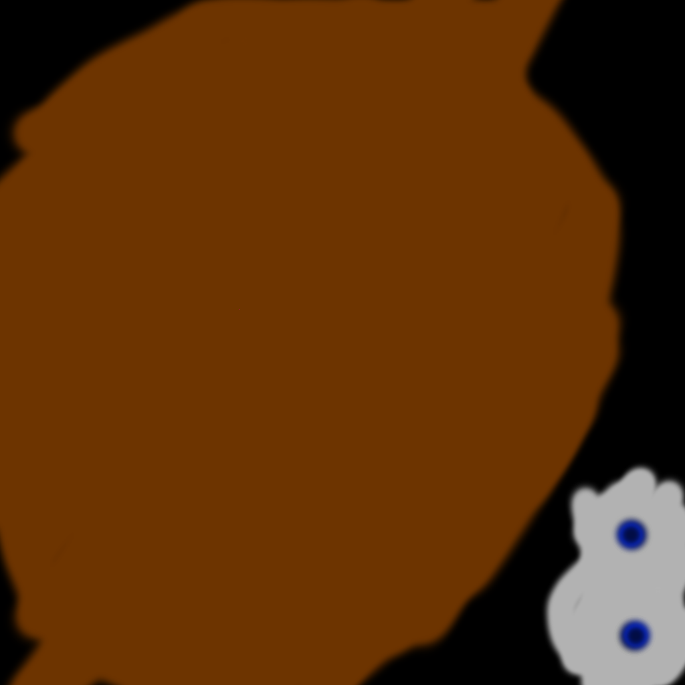
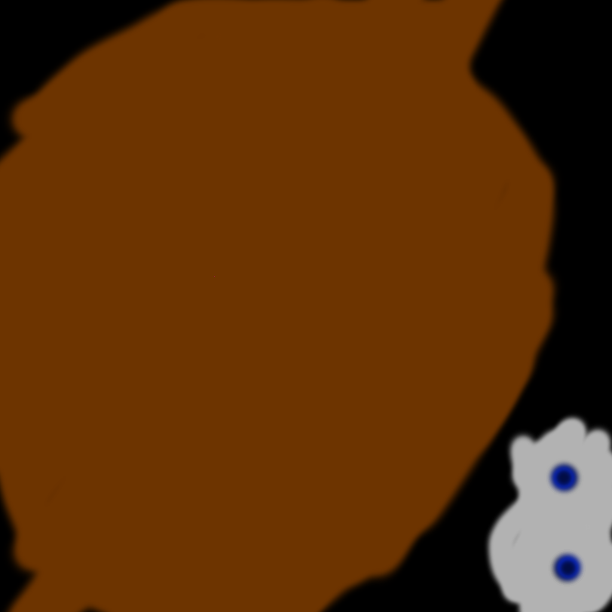

#version 300 es precision mediump float; in vec3 a_Pos; in vec4 a_Color; in vec2 a_texCood; in vec3 a_Normal; uniform mat4 model_mat; uniform mat4 camera_mat; out vec2 v_texCood; out vec4 v_Color; out vec3 v_Normal; void main(){ gl_Position = camera_mat * model_mat * vec4(a_Pos, 1.0); v_texCood= a_texCood; v_Color= a_Color; v_Normal= a_Normal; }
#version 300 es precision mediump float; //layout (location=0) out vec4 FragColor; uniform sampler2D tex0; uniform vec4 lightColor; in vec4 v_Color; in vec2 v_texCood; void main(){ FragColor += v_Color; FragColor += texture(tex0,v_texCood) * lightColor; }
#version 300 es precision mediump float; //layout (location = 0) //layout (location = 1) in vec3 a_Pos; uniform mat4 model_mat; uniform mat4 camera_mat; void main(){ gl_Position = camera_mat * model_mat * vec4(a_Pos, 1.0); }
#version 300 es precision mediump float; out vec4 FragColor; uniform vec4 lightColor; void main(){ FragColor = lightColor; }
#version 300 es precision mediump float; in vec3 a_Pos; in vec2 a_TexCood; uniform mat4 model_mat; uniform mat4 camera_mat; out vec2 v_TexCood; void main(){ gl_Position = camera_mat * model_mat * vec4(a_Pos, 1.0); v_TexCood = a_TexCood; }
#version 300 es precision mediump float; out vec4 FragColor; uniform sampler2D Mtex0; uniform vec4 lightColor; in vec2 v_TexCood; void main(){ FragColor =texture(Mtex0, v_TexCood) * lightColor; }
 
